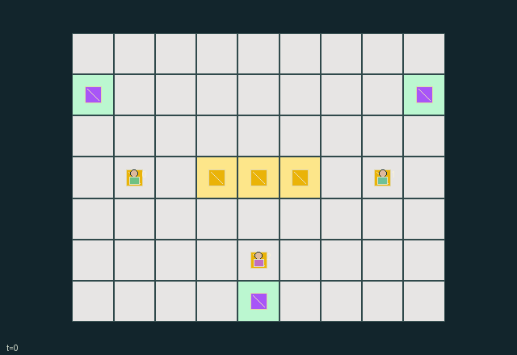

GI108 · Escrow Street Market

Complete each trader's own private two-unit delivery order while managing finite capacity, barter commitments and competing demand for scarce surplus.
Identity and original contract
3 independently actionable roles; 15 discrete commands per role; 149 native observation columns per role; original horizon 96 steps. Declared per-step reward range: -0.01 to 2. Observation regime: partially_observable.
Source SHA-256: 9733681abc63b4d46b4265092215aa9d4c9e5ac3fb049c5a28fb5ca499e8671b
The objective, rewards, population, map and horizon remain original. A preview is not a success claim.
Objective and gameplay
Complete each trader's own private two-unit delivery order while managing finite capacity, barter commitments and competing demand for scarce surplus.
Actual owned goods are locked by posted offers. A swap requires reciprocal advertised requests, spatial proximity and simultaneous consent, transfers ownership atomically and frees no capacity. Others can refuse, compete for ground goods or broker intermediate exchanges.
- Each trader starts carrying two units of their own commodity. Capacity is two; three individual surplus goods lie on the central street.
- At reset each trader privately needs two units of one of the other commodities. Other roles cannot see the private order card.
- Posting an offer locks a specific owned good for a six-state countdown. A locked good cannot be delivered; withdrawal or expiry releases it.
- Post a requested commodity separately. Both adjacent traders must choose confirm with reciprocal live offers for an atomic one-for-one swap.
- Public offers are voluntary signals and need not truthfully state a private need. Trade itself pays no reward.
- Deliver only an unlocked required good at your own address. Individual and smaller shared delivery rewards create both bargaining incentives and competing priorities.
- Goods have persistent identities and move with actual carriers. Delivered goods stay at their real destination; scarcity is never replenished.
Ending: All three private orders have zero remaining quantity. Otherwise the episode truncates at 96 transitions. Some private demand realizations are jointly infeasible because supply is finite; this is retained as a real boundary, not silently repaired.
What this game explores
Information, sensing & communication: Who knows a fact, when it was measured, and whether it was communicated are separate state variables. Test memory or communication using only the same role-visible evidence.
Commitment, exchange & governance: Promises consume time, liquidity, access or material. Separate an announced agreement from a binding commitment and from its eventual delivery; log cancellation and expiry too.
Joint transport & shared access: Positions, load geometry, occupancy and persistent access constrain whose action can succeed next. Distinguish physical handoff, shared controls and simultaneous force from a cosmetic cooperation label.
These are questions supported by rule structure, not observed learning effects.
Play it: operating walkthrough
crucibles play --game gi108Keep Python running and open its printed address. Select this game, set a seed and press Create session. The game itself is always English.
Assign a role range to Host with Assign / take over, or Assign all roles. Invite a second participant with Create player invitation, then assign a disjoint subset. Every original role is available.
For every owned role choose a legal command and press Queue. Arrow keys / WASD queue a declared directional action for the current role camera when available. Space or Advance one joint step advances everyone together. Non-directional games use the selectors.
Unqueued roles use the labelled untrained uniform-legal policy. Take over or release roles before the next step without resetting. Full-state debug is privileged and permanently logged; role cameras preserve permissions. Close the session to retain logs. Server restart does not restore sessions.
Complete command reference
IDs and English labels exactly match the manifest. Availability depends on role, resources, location and phase. An available action can still have no productive effect.
0·wait
1·north
2·east
3·south
4·west
5·escrow one owned grain
6·escrow one owned tool
7·escrow one owned medicine
8·request grain
9·request tool
10·request medicine
11·confirm reciprocal nearby trade
12·withdraw offer and request
13·pick up ground good if capacity remains
14·deliver required unlocked good at own address
Roles and capability identifiers
These original role names describe capabilities, not interchangeable skins. Check each owned role's legal selector before planning handoffs.
agent_0·grain producer
agent_1·tool maker
agent_2·medicine courier
Information and observation permissions
Only own role, own required type and own remaining quantity are private-row fields. Positions, inventory objects, posted offers/requests/timers, addresses and completed-delivery counts are public. Each order entity uses an identity visibility matrix, so a role scene cannot reveal another trader's need.
The GIF is full-state debug and may reveal hidden entities or private state. Train on obs[agent], not the picture, state tree or another role's private row. Field slices and visibility are in the original manifest.
Reinforcement-learning integration
import jax
from crucibles_jaxmarl import make
env = make("gi108")
key = jax.random.PRNGKey(0)
key, rk, ak, sk = jax.random.split(key, 4)
obs, state = jax.jit(env.reset)(rk)
actions = env.sample_actions(ak, state)
obs, state, rewards, dones, info = jax.jit(env.step_env)(sk, state, actions)
done = dones["__all__"]Observations are float32 vectors of width 149; actions are scalar int32; masks have 15 entries. Supply all 3 roles each transition. Masked sampling is an engineering reference, not a trained learner.
step_env retains terminal data without reset. step performs outer autoreset and keeps terminal data in info["raw_state"] and info["raw_observation"]. Use dones["__all__"] for episode boundaries; separate completion, failure and time limit in analysis.
JIT or vmap equal identities and shapes. Split independent reset, policy and transition keys. Group different shapes explicitly; do not shrink the population or horizon. Host rendering stays outside training.
Training questions and fair evaluation
Define valid completion from the objective before fitting. Preserve original rewards and also report real deliveries/services, losses, resource state, unresolved episodes and per-role returns. Animation is not a reward signal.
Who knows a fact, when it was measured, and whether it was communicated are separate state variables. Test memory or communication using only the same role-visible evidence.
Promises consume time, liquidity, access or material. Separate an announced agreement from a binding commitment and from its eventual delivery; log cancellation and expiry too.
Positions, load geometry, occupancy and persistent access constrain whose action can succeed next. Distinguish physical handoff, shared controls and simultaneous force from a cosmetic cooperation label.
Compare memory, communication or centralized critics under matched actor information. Declare critic access; keep actor inputs role-filtered. Match partner/opponent distributions, masks, compute and checkpoint selection. Final tests never enter fitting or selection.
Independent training runs or source-pairing blocks are inferential units; episodes from one policy are not independent training replications. Save hashes, keys, versions, device, time and cost. Negative, zero, failed and indeterminate outcomes are valid. No trained checkpoint or target score is supplied.
Classification and evidence
Overlapping editorial labels are reading aids, not proof of novelty, difficulty, strategic equivalence or learning effects.
- Information, sensing & communication
- Evidence
manifest.task.objective: Complete each trader's own private two-unit delivery order while managing finite capacity, barter commitments and competing demand for scarce surplus.
- Evidence
manifest.task.observation_access: Only own role, own required type and own remaining quantity are private-row fields. Positions, inventory objects, posted offers/requests/timers, addresses and completed-delivery counts are public. Each order entity uses an identity visibility matrix, so a role scene cannot reveal another trader's need.
- Evidence
scene.rules.1: At reset each trader privately needs two units of one of the other commodities. Other roles cannot see the private order card.
- Commitment, exchange & governance
- Evidence
manifest.task.objective: Complete each trader's own private two-unit delivery order while managing finite capacity, barter commitments and competing demand for scarce surplus.
- Evidence
manifest.task.interaction: Actual owned goods are locked by posted offers. A swap requires reciprocal advertised requests, spatial proximity and simultaneous consent, transfers ownership atomically and frees no capacity. Others can refuse, compete for ground goods or broker intermediate exchanges.
- Evidence
manifest.task.observation_access: Only own role, own required type and own remaining quantity are private-row fields. Positions, inventory objects, posted offers/requests/timers, addresses and completed-delivery counts are public. Each order entity uses an identity visibility matrix, so a role scene cannot reveal another trader's need.
- Joint transport & shared access
- Evidence
manifest.task.objective: Complete each trader's own private two-unit delivery order while managing finite capacity, barter commitments and competing demand for scarce surplus.
- Evidence
manifest.task.interaction: Actual owned goods are locked by posted offers. A swap requires reciprocal advertised requests, spatial proximity and simultaneous consent, transfers ownership atomically and frees no capacity. Others can refuse, compete for ground goods or broker intermediate exchanges.
- Evidence
manifest.task.observation_access: Only own role, own required type and own remaining quantity are private-row fields. Positions, inventory objects, posted offers/requests/timers, addresses and completed-delivery counts are public. Each order entity uses an identity visibility matrix, so a role scene cannot reveal another trader's need.
Source, receipts and preview limits
The world-only English GIF replays saved untrained legal actions through the original kernel. At most 25 actual endpoints include initial and terminal state; no invented interpolation. It is full-state debug, not the role observation.
Original source, observation slices, manifest and mechanism
Native receipt · Presentation receipt
Engineering passes do not establish learning. Nonzero floating differences remain recorded and undetermined; no new tolerance was introduced. Human scores remain unverified.